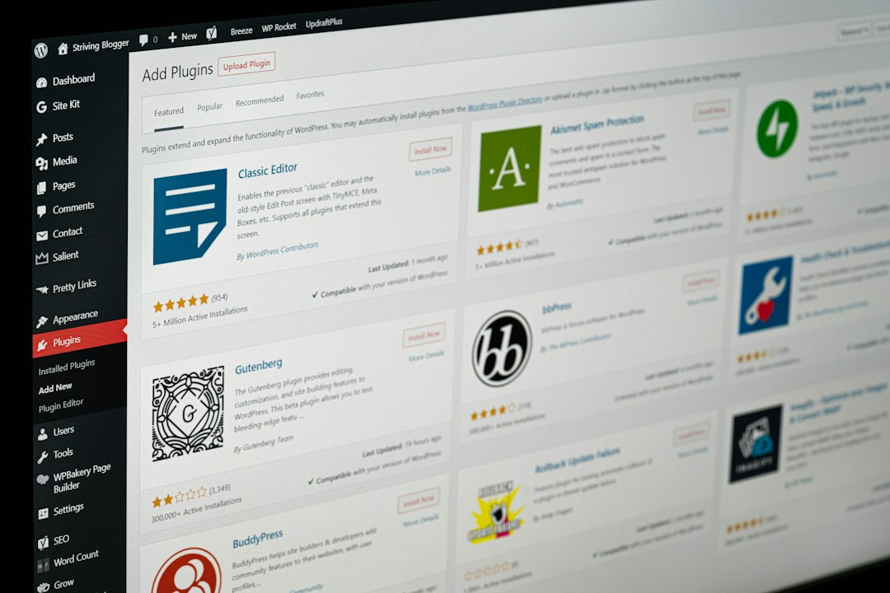
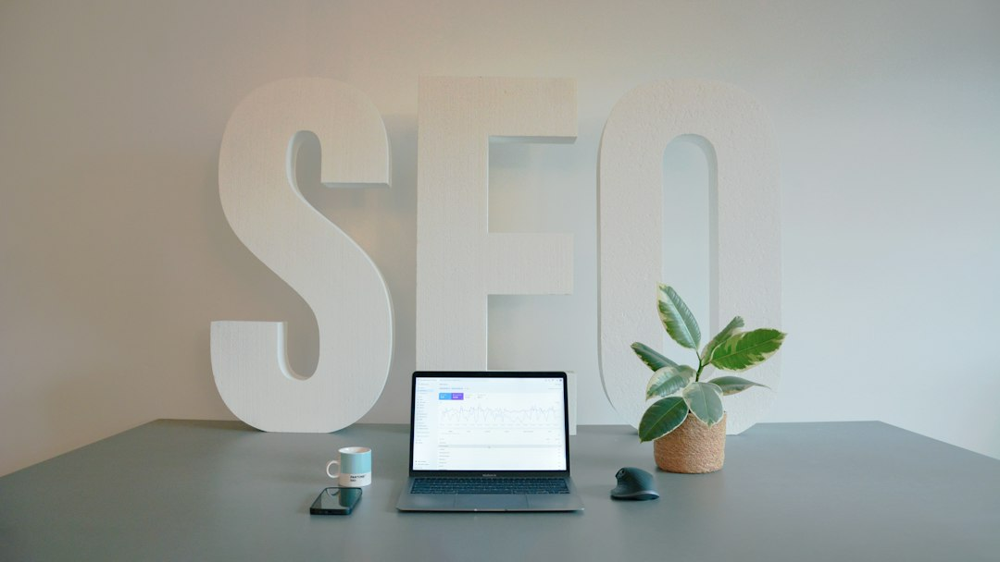
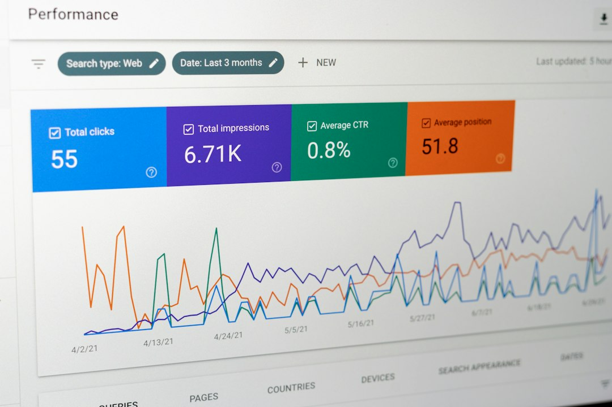

The next stage is content creation. SEOAD uses AI to help simplify the process of developing pages around identified search opportunities. Content may include product reviews, comparisons, buying guides, informational resources, tutorials, lists, and answers to frequently searched questions.
A weekly workflow may include identifying keywords, researching search intent, evaluating affiliate opportunities, creating content, publishing pages, reviewing existing content, and analyzing performance. The exact workload depends on the number of websites and pages being developed, but SEOAD presents the model as a business activity that can be approached within a part-time schedule.
SEO Affiliate Domination provides a practical framework for combining search engine optimization, affiliate marketing, keyword research, artificial intelligence, and content creation. SEOAD is designed around the development of websites that target relevant search queries and connect visitors with products or services that may meet their needs.
Keyword research should also consider competition. A keyword with high search volume may attract significant competition, while a more specific search may have a smaller audience but clearer intent. SEOAD encourages users to evaluate the relationship between search demand, competition, relevance, commercial intent, and content requirements.
This model can be particularly attractive to people who prefer working behind the scenes. Research, writing, website management, SEO, data analysis, and content planning can all contribute to the development of an affiliate website without requiring the owner to make themselves the product.
A digital asset requires management. Product information can become outdated. Affiliate links can stop working. Search intent can change. Competitors can publish stronger content. Google can change how search results are displayed. Regular review helps keep the website relevant and useful.

Good SEO content should address the searcher's actual need. A page targeting a comparison keyword should provide meaningful comparison information. A product review should explain relevant characteristics and limitations. A buying guide should help readers understand the factors that may affect their decision. The purpose is to provide information that is useful independently of the affiliate relationship.
SEO Affiliate Domination therefore requires realistic expectations. AI can make many tasks faster, but it does not eliminate the need for research or quality control. SEO can create opportunities for organic traffic, but rankings are not guaranteed. Affiliate marketing can generate commissions, but not every visitor will make a qualifying purchase.
Over time, additional content can expand the website's coverage. A single website can develop from a small collection of focused pages into a broader resource containing reviews, comparisons, guides, tutorials, and commercial content. Each new page can be evaluated according to its relevance, usefulness, search intent, and potential contribution to the overall website.
Artificial intelligence is an important part of the SEOAD workflow. AI can help with research, brainstorming, keyword organization, content outlines, drafting, editing, optimization, and repetitive administrative tasks. This can reduce the amount of manual work required to operate a content-driven affiliate website.
The potential advantage of creating search-focused digital assets is that published content can continue to receive visitors after publication. However, traffic and commissions are not guaranteed. Search visibility depends on many external factors, and affiliate revenue depends on visitor behavior and the terms of individual programs.
Search engine optimization then helps organize that information for both visitors and search engines. SEOAD incorporates practices such as relevant keyword targeting, logical headings, descriptive titles, internal linking, useful page structure, readable content, and appropriate technical optimization.

SEO is not a guarantee of Google rankings. Search engines evaluate many factors, and results can change over time. A new website may need time to establish authority and attract search visibility. Existing pages may also need updates as competitors publish new information or search behavior changes.
After identifying suitable keywords, users can research affiliate programs and offers that match the audience. An affiliate relationship may provide a commission when a visitor completes a qualifying action. The terms vary by program, so website owners should understand commission structures, attribution periods, promotional restrictions, disclosure requirements, and other conditions.
SEO Affiliate Domination also provides an alternative to business models that depend heavily on social media. Website owners do not necessarily need to become influencers or build a personal audience. The focus is on creating information that can be discovered through search.
The concept is straightforward. Consumers frequently use Google to research problems, products, software, services, and purchasing decisions. They may search for reviews, comparisons, alternatives, recommendations, specifications, pricing information, or solutions. SEO Affiliate Domination uses these search behaviors as the starting point for creating focused website content.
SEOAD provides the training and framework for approaching that workflow. The goal is to help users understand how to find relevant searches, create useful pages, connect those pages with suitable affiliate offers, attract organic traffic, and improve their websites over time.
SEOAD is designed with beginners in mind. Users can learn the fundamental concepts progressively, including keyword research, search intent, affiliate marketing, website structure, content creation, and SEO. AI tools can support the learning and production process by helping users organize tasks and generate starting points for further development.
The SEOAD approach brings these realities into a structured workflow. Users can begin by identifying a specific audience and market, research the searches associated with that audience, identify relevant affiliate opportunities, create useful content, optimize the website, and monitor performance.
SEO Affiliate Domination is therefore a method for building an affiliate website around search demand rather than personal influence. The process combines SEO, AI, content, affiliate marketing, and digital asset development into a repeatable workflow.
For people interested in creating an online business based on websites rather than social media influence, SEO Affiliate Domination offers a structured starting point. The model requires learning, consistent implementation, content quality, and ongoing optimization, but it provides a clear framework for combining AI with established affiliate marketing and SEO practices.
